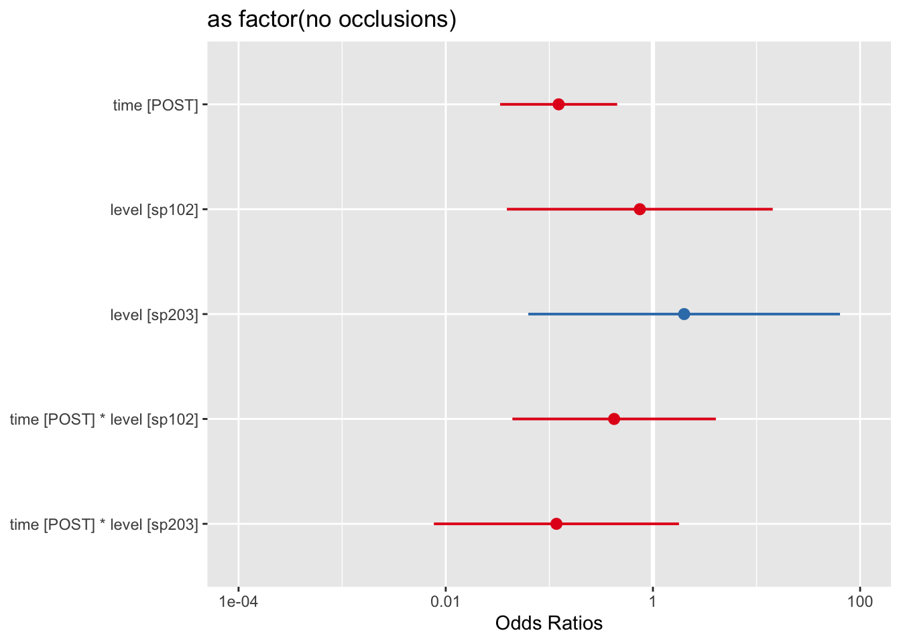
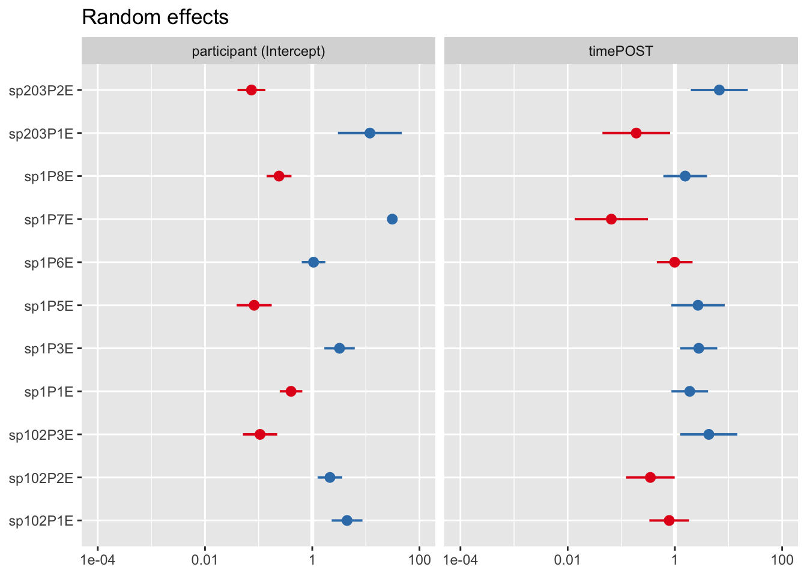
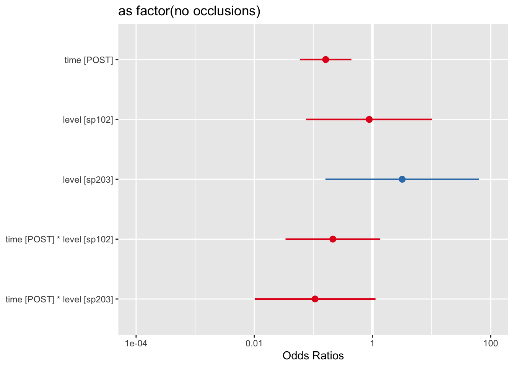
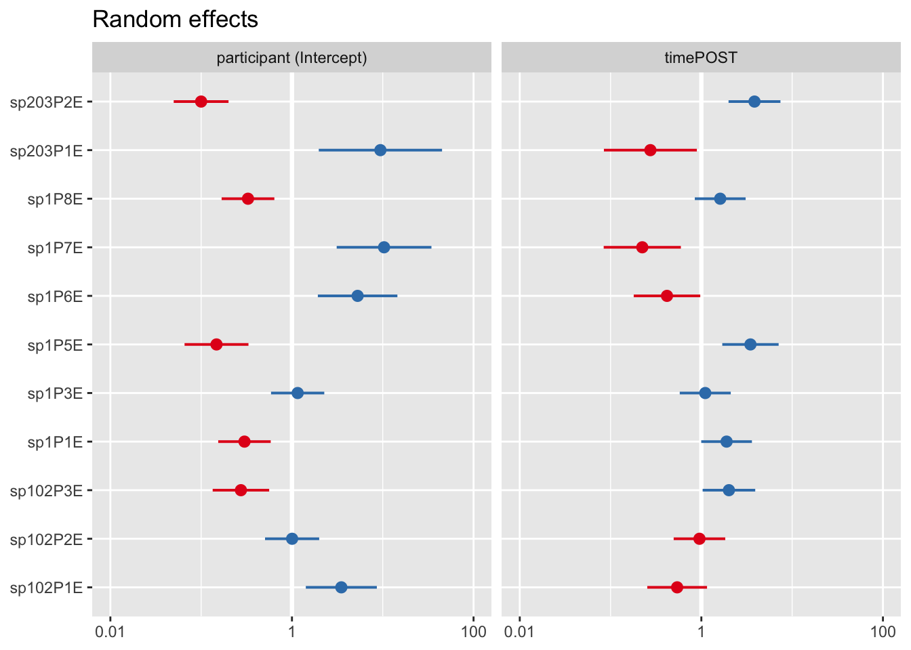
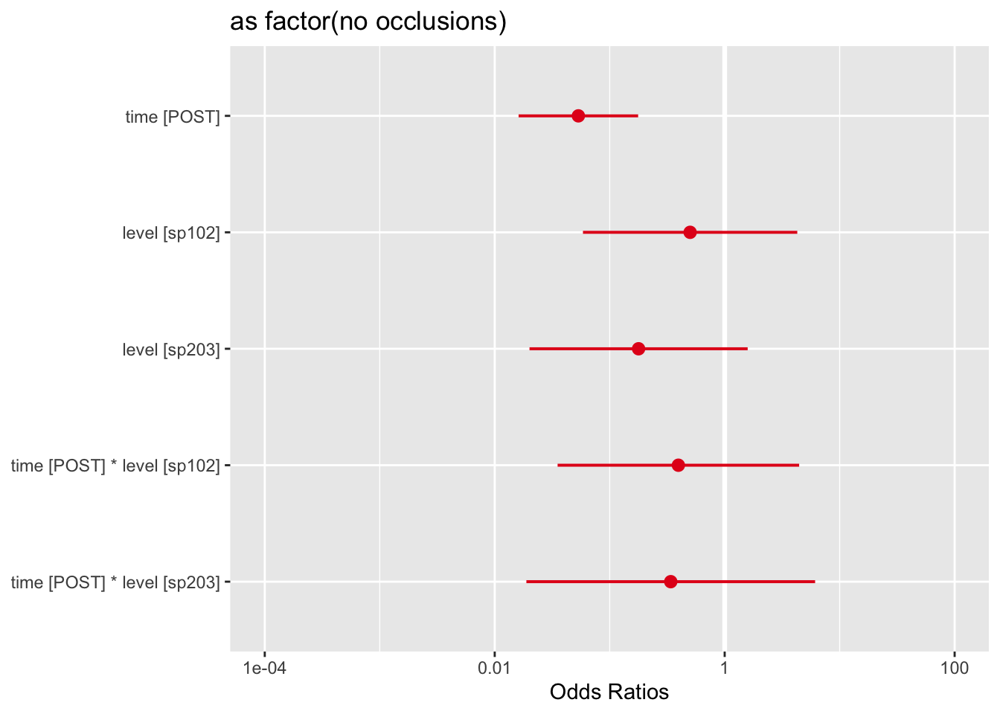
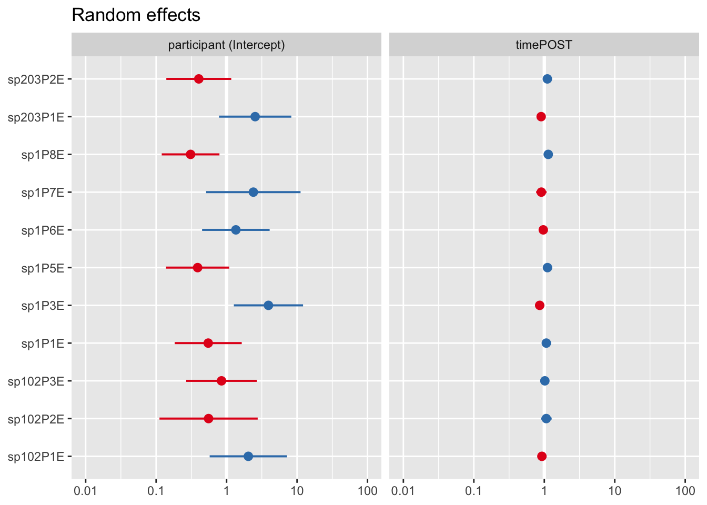

| no_occlusions | PRE | POST |
|---|---|---|
| 0 | NA | 1 |
| 1 | 321 | 615 |
| 3 | 2 | 1 |
| a | 386 | 111 |
| N | 2 | 3 |
| p | 25 | 13 |
| NA | 5 | 4 |
| 2 | 6 | NA |
Report Categorical Analysis
Sentence Reading Task
Descriptive Taps
| no_occlusions | PRE | POST |
|---|---|---|
| 1 | 321 | 615 |
| a | 386 | 111 |
| no_occlusions | participant | POST | PRE |
|---|---|---|---|
| 1 | sp102P1E | 54 | 10 |
| 1 | sp102P2E | 64 | 18 |
| 1 | sp102P3E | 65 | 60 |
| 1 | sp1P1E | 59 | 41 |
| 1 | sp1P3E | 20 | 11 |
| 1 | sp1P5E | 65 | 55 |
| 1 | sp1P6E | 53 | 23 |
| 1 | sp1P7E | 46 | NA |
| 1 | sp1P8E | 64 | 47 |
| 1 | sp203P1E | 60 | 1 |
| 1 | sp203P2E | 65 | 55 |
| a | sp102P1E | 13 | 53 |
| a | sp102P2E | 2 | 48 |
| a | sp102P3E | 2 | 7 |
| a | sp1P1E | 9 | 26 |
| a | sp1P3E | 43 | 52 |
| a | sp1P5E | 2 | 7 |
| a | sp1P6E | 11 | 39 |
| a | sp1P7E | 17 | 60 |
| a | sp1P8E | 4 | 18 |
| a | sp203P1E | 6 | 64 |
| a | sp203P2E | 2 | 12 |
SRT Occlusions
These are logistic regressions, where the probability of realizing a rhotic as either an approximate or with 1 occlusion is modeled as a function of test time (PRE/POST), level (sp 102, sp203/204, sp1).


| as.factor(no_occlusions) | |||
|---|---|---|---|
| Predictors | Odds Ratios | CI | p |
| (Intercept) | 1.60 | 0.29 – 8.95 | 0.590 |
| PRE | Reference | ||
| POST | 0.12 | 0.03 – 0.45 | 0.002 |
| sp1 | Reference | ||
| sp102 | 0.75 | 0.04 – 14.34 | 0.847 |
| timePOST:levelsp102 | 0.42 | 0.04 – 4.05 | 0.455 |
| timePOST:levelsp203 | 0.12 | 0.01 – 1.79 | 0.123 |
| sp203 | 2.00 | 0.06 – 63.91 | 0.695 |
| Random Effects | |||
| σ2 | 3.29 | ||
| τ00 participant | 4.39 | ||
| τ11 participant.timePOST | 2.26 | ||
| ρ01 participant | -0.85 | ||
| ICC | 0.46 | ||
| N participant | 11 | ||
| Observations | 1433 | ||
| Marginal R2 / Conditional R2 | 0.258 / 0.601 | ||
| X | npar | AIC | BIC | logLik | deviance | Chisq | Df | Pr..Chisq. |
|---|---|---|---|---|---|---|---|---|
| null_mod_tap_srt | 4 | 1175.474 | 1196.544 | -583.7368 | 1167.474 | NA | NA | NA |
| time_mod_tap_srt | 5 | 1165.111 | 1191.449 | -577.5556 | 1155.111 | 12.362269 | 1 | 0.0004381 |
| group_mod_tap_srt | 7 | 1166.577 | 1203.450 | -576.2887 | 1152.577 | 2.533826 | 2 | 0.2816999 |
| int_mod_tap_srt | 9 | 1168.445 | 1215.852 | -575.2223 | 1150.445 | 2.132861 | 2 | 0.3442351 |
Lectura task


| as factor(no occlusions) | |||
|---|---|---|---|
| Predictors | Odds Ratios | CI | p |
| (Intercept) | 1.82 | 0.43 – 7.62 | 0.413 |
| time [POST] | 0.16 | 0.06 – 0.44 | <0.001 |
| level [sp102] | 0.88 | 0.08 – 10.24 | 0.919 |
| level [sp203] | 3.19 | 0.16 – 63.50 | 0.448 |
| time [POST] * level [sp102] |
0.21 | 0.03 – 1.35 | 0.100 |
| time [POST] * level [sp203] |
0.11 | 0.01 – 1.13 | 0.063 |
| Random Effects | |||
| σ2 | 3.29 | ||
| τ00 participant | 2.92 | ||
| τ11 participant.timePOST | 1.08 | ||
| ρ01 participant | -0.97 | ||
| ICC | 0.35 | ||
| N participant | 11 | ||
| Observations | 706 | ||
| Marginal R2 / Conditional R2 | 0.300 / 0.542 | ||
| X | npar | AIC | BIC | logLik | deviance | Chisq | Df | Pr..Chisq. |
|---|---|---|---|---|---|---|---|---|
| null_mod_tap_lectura | 4 | 692.4193 | 710.6578 | -342.2097 | 684.4193 | NA | NA | NA |
| time_mod_tap_lectura | 5 | 680.2055 | 703.0035 | -335.1027 | 670.2055 | 14.213870 | 1 | 0.0001632 |
| group_mod_tap_lectura | 7 | 677.4765 | 709.3938 | -331.7382 | 663.4765 | 6.729014 | 2 | 0.0345791 |
| int_mod_tap_lectura | 9 | 677.3561 | 718.3926 | -329.6780 | 659.3561 | 4.120360 | 2 | 0.1274310 |
Picture Naming Task


| as factor(no occlusions) | |||
|---|---|---|---|
| Predictors | Odds Ratios | CI | p |
| (Intercept) | 7.14 | 2.03 – 25.08 | 0.002 |
| time [POST] | 0.05 | 0.02 – 0.18 | <0.001 |
| level [sp102] | 0.50 | 0.06 – 4.28 | 0.527 |
| level [sp203] | 0.18 | 0.02 – 1.58 | 0.122 |
| time [POST] * level [sp102] |
0.40 | 0.04 – 4.44 | 0.452 |
| time [POST] * level [sp203] |
0.34 | 0.02 – 6.12 | 0.464 |
| Random Effects | |||
| σ2 | 3.29 | ||
| τ00 participant | 1.13 | ||
| τ11 participant.timePOST | 0.01 | ||
| ρ01 participant | -1.00 | ||
| ICC | 0.24 | ||
| N participant | 11 | ||
| Observations | 189 | ||
| Marginal R2 / Conditional R2 | 0.490 / 0.610 | ||
| X | npar | AIC | BIC | logLik | deviance | Chisq | Df | Pr..Chisq. |
|---|---|---|---|---|---|---|---|---|
| null_mod_tap_image_df | 4 | 196.5592 | 209.5262 | -94.27961 | 188.5592 | NA | NA | NA |
| time_mod_tap_image_df | 5 | 180.6005 | 196.8092 | -85.30023 | 170.6005 | 17.9587659 | 1 | 0.0000226 |
| group_mod_tap_image_df | 7 | 179.8760 | 202.5683 | -82.93802 | 165.8760 | 4.7244142 | 2 | 0.0942121 |
| int_mod_tap_image_df | 9 | 183.0029 | 212.1787 | -82.50147 | 165.0029 | 0.8731084 | 2 | 0.6462595 |